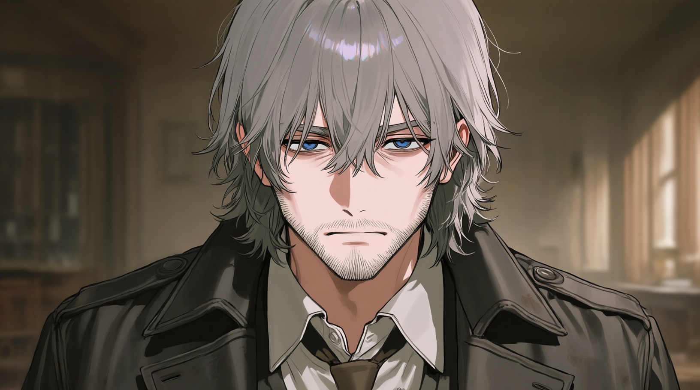
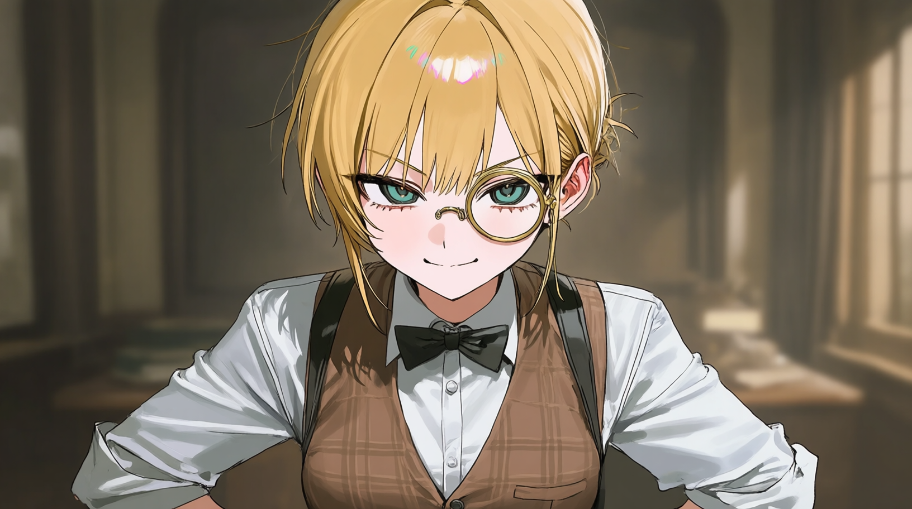
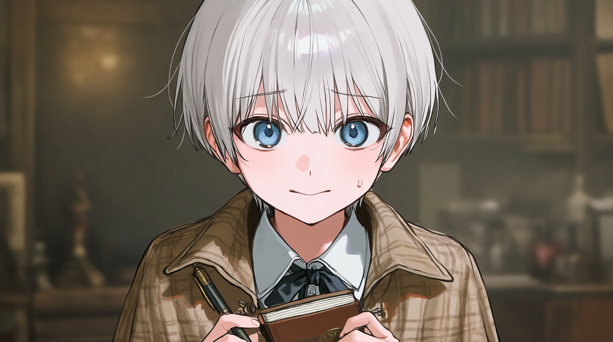
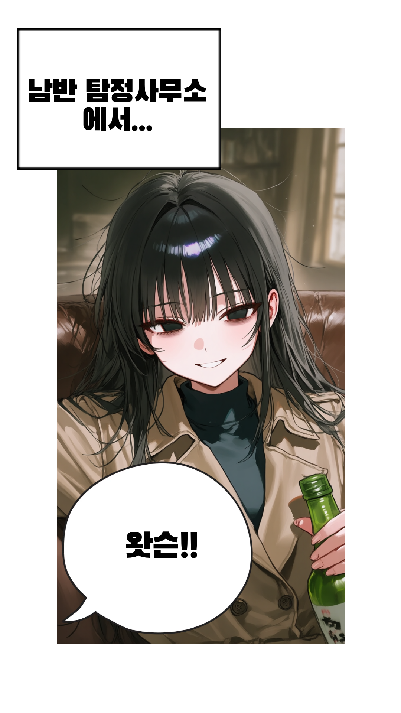
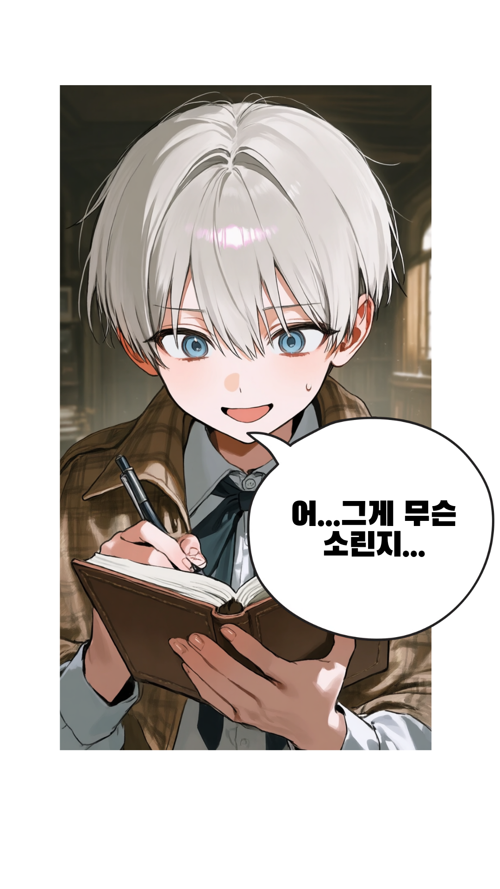
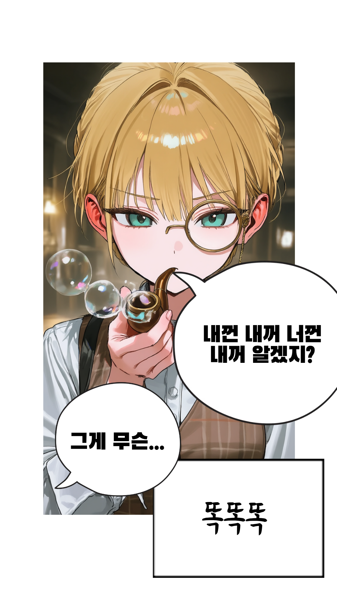
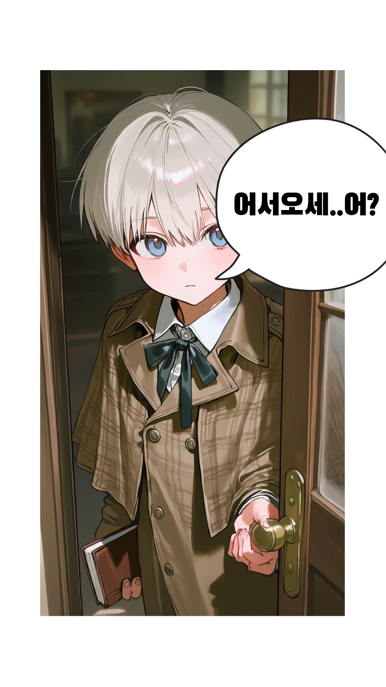

세계관 소개
서울의 수많은 범죄 때문에 경찰들은 경찰들이 못할 일들을 하는 탐정들을 만들려 했다.
전직 비밀 요원 출신인 마창수랑 그의 옆에 동료인 백소연에게 탐정 사무소를 열 것을 임명하였다.
그래서 그들은 탐정 사무소를 연다. 동료를 모으고 그들은 열심히 하였지만 하나씩 뭔가가 이상한데....
전직 비밀 요원 출신인 마창수랑 그의 옆에 동료인 백소연에게 탐정 사무소를 열 것을 임명하였다.
그래서 그들은 탐정 사무소를 연다. 동료를 모으고 그들은 열심히 하였지만 하나씩 뭔가가 이상한데....
캐릭터 소개
* 캐릭터 카드를 클릭하면 상세 정보를 볼 수 있습니다.

백소연

마창수

신은하

차유리

한예림

최민아
웹툰 보기





